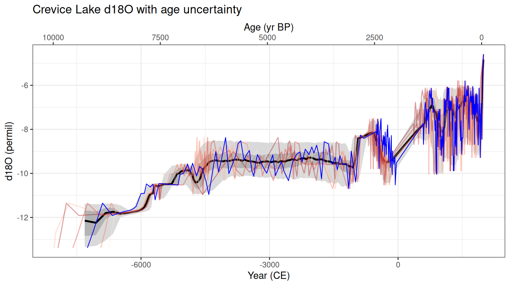
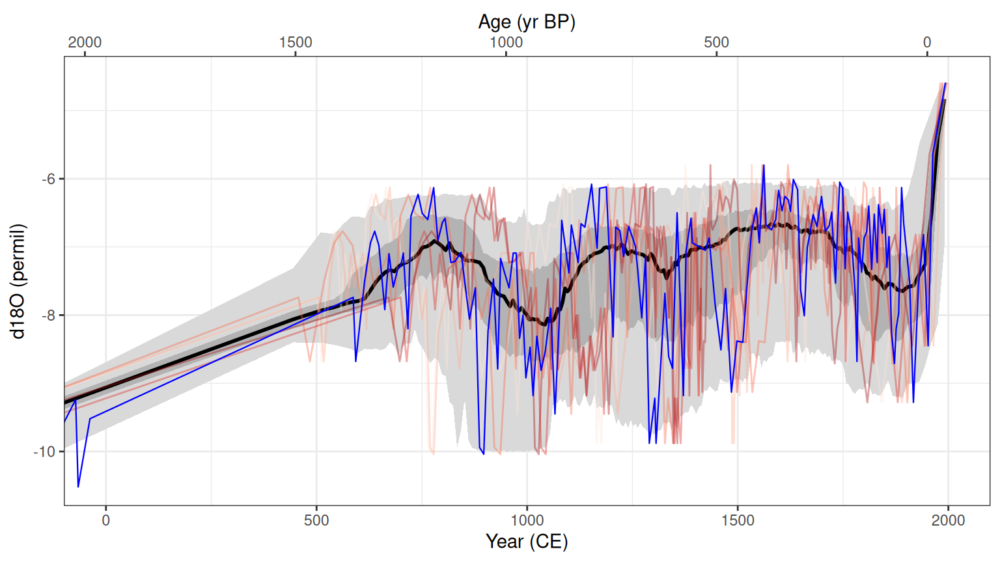
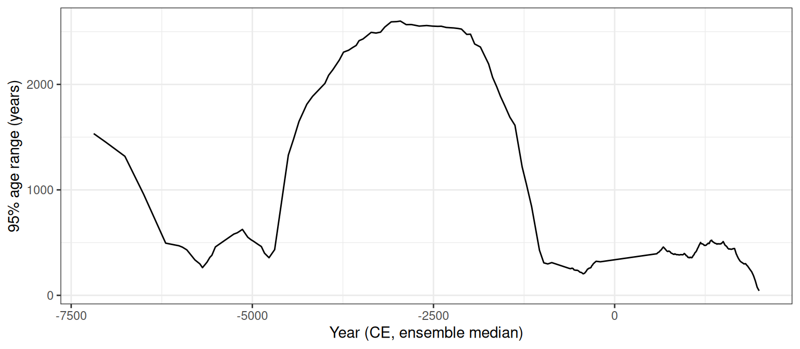
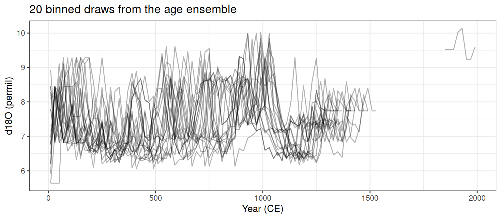

library(geoChronR)
library(dplyr)
library(ggplot2)
source(here::here("R/helpers.R"))
checkVersions()
D <- getHydro2k()
L <- D[["LS08STCR"]]
L$geo$siteName[1] "Crevice"Building an age ensemble for Crevice Lake
Most Hydroclimate2k records from lakes, speleothems and marine sediments are dated by radiocarbon or U/Th, and their time axes come from an age model. If we want to incorporate age uncertainty into our analyses, geoChronR can help with this.
geoChronR handles this with age ensembles: many plausible age models (typically 1000), each a potential time axis for the record. Any analysis run on every ensemble member gives a distribution of results instead of a single answer.
In this tutorial we:
The example is Crevice Lake, Yellowstone National Park (LS08STCR; Stevens and Dean, 2008). Its calcite d18O is interpreted as a record of streamflow (larger values, less streamflow), and it is one of the records in the WNA composite in tutorial 2.
library(geoChronR) loads the whole family: lipdR, ens, lipdViz and agemodelR.
Dating information lives in chronData, separate from the proxy data in paleoData. Each chronData can hold measurement tables (the dates themselves) and models (age models built from them).
There are 12 radiocarbon dates and one calendar age, the 7,627 yr BP tephra at 313 cm (most likely the Mazama ash).
lipdR::getTables(L,pc = "chron) return the tables as data frames. In an interactive session, selectData(L) with no var.name lists every variable and asks you to pick one.
This dataset already includes an age model with a 1,000-member ensemble:
[1] 102 1000[1] "yr BP"plotChronEns() shows the ensemble against depth: the median (black), quantile ribbons (grey), a few individual ensemble members (red), and the probability distributions of the dates (purple).
You’ll often want to build your own model: to use updated calibration curves, change assumptions, or because the dataset has dates but no model. agemodelR runs Bacon, Bchron, BAM and OxCal on LiPD data. Here we use Bchron, which is quick and runs anywhere.
First, a constraint for the core top. The original age model puts the sediment surface (0 cm) at 1993 CE, which is -43 yr BP. Without a surface age, Bchron extrapolates freely above the shallowest date at 20 cm, and the youngest samples end up with ages in the future. We might want to add that the LiPD file, but for now we add the surface age as a calendar date with a small uncertainty:
chron <- L$chronData[[1]]$measurementTable[[1]]
for (v in names(chron)) {
if (is.list(chron[[v]]) && !is.null(chron[[v]]$values)) {
chron[[v]]$values <- c(NA, chron[[v]]$values)
}
}
chron$depth$values[1] <- 0
chron$age$values[1] <- -43 # 1993 CE
chron$`SD-1`$values[1] <- 5
L$chronData[[1]]$measurementTable[[1]] <- chronNow run Bchron. Giving all the arguments explicitly lets it run without asking questions. Rows with a radiocarbon age are calibrated with IntCal20, and rows with only a calendar age (our core top and the tephra) are treated as calendar ages. We store the result as model 2, so the original model stays in place.
set.seed(2026)
L <- runBchron(L,
chron.num = 1,
meas.table.num = 1,
model.num = 2,
cal.curves = "intcal20",
iter = 10000,
ask = FALSE,
lab.id.var = "labID",
age.14c.var = "age14C",
age.14c.uncertainty.var = "SD",
age.var = "age",
age.uncertainty.var = "SD-1",
depth.var = "depth",
reservoir.age.14c.var = NULL,
reservoir.age.14c.uncertainty.var = NULL,
rejected.ages.var = NULL)This takes a few minutes. When you’re experimenting, lower iter (with ask = FALSE) to make it faster.
The age model gives ages at a regular set of depths. mapAgeEnsembleToPaleoData() interpolates every ensemble member to the depths of the d18O samples and adds an ageEnsemble column to the paleo measurement table.
selectData() pulls a variable out of a table, together with its units and metadata:
The ensemble is in yr BP. convertBP2AD() converts it to years CE, using year CE = 1950 - yr BP:
plotTimeseriesEnsRibbons() shows the spread of the ensemble as quantile ribbons, and plotTimeseriesEnsLines() adds a few individual members. Here we also add the published time axis (blue) and an axis in yr BP on top.
plotTimeseriesEnsRibbons(X = yearEns, Y = d18O, n.bins = 400) |>
plotTimeseriesEnsLines(X = yearEns, Y = d18O, n.ens.plot = 5, color = "Reds", alp = 0.4) +
geom_line(aes(x = yearPub$values, y = d18O$values), color = "blue", linewidth = 0.4) +
scale_x_continuous("Year (CE)", sec.axis = sec_axis(~ 1950 - ., name = "Age (yr BP)")) +
labs(y = "d18O (permil)", title = "Crevice Lake d18O with age uncertainty") +
theme_bw() +
theme(legend.position = "none")
Zoom in on the Common Era:
plotTimeseriesEnsRibbons(X = yearEns, Y = d18O, n.bins = 400) |>
plotTimeseriesEnsLines(X = yearEns, Y = d18O, n.ens.plot = 5, color = "Reds", alp = 0.4) +
geom_line(aes(x = yearPub$values, y = d18O$values), color = "blue", linewidth = 0.4) +
scale_x_continuous("Year (CE)", sec.axis = sec_axis(~ 1950 - ., name = "Age (yr BP)")) +
coord_cartesian(xlim = c(0, 2000), ylim = c(-10.5, -4.5)) +
labs(y = "d18O (permil)") +
theme_bw() +
theme(legend.position = "none")
How uncertain is the age of each sample? The width of the 95% range of the ensemble:

Ages are best constrained near the dates and worst where dates are far apart. The 133 cm gap between the dates at 122 and 255 cm leaves the middle Holocene uncertain by more than 2,000 years. In the Common Era the 95% range is about 200 to 500 years, which is enough to blur the timing of century-scale events. Compare the binned draws below.
compositeR and actR use an age ensemble whenever a record has one. In tutorial 2 every record had a single time axis, so compositeR simulated age uncertainty with BAM. To use the Bchron ensemble instead, put the matrix (in yr BP) in the record’s ageEnsemble column:
[1] 1[1] TRUElipdR::getTsTime() returns a record’s time axis on any scale. When there is an age ensemble it returns that, as a matrix:
compositeEnsembles() does this for every record. Its binning function, sampleEnsembleThenBinTs(), picks a random column (one complete age model) each time it bins the record. We can call it directly, and tell it to bin on the ageEnsemble column, converted to years CE:
binvec <- seq(0, 2000, by = 20)
set.seed(1)
draws <- replicate(20, compositeR::sampleEnsembleThenBinTs(crevice, binvec,
time.variable = "ageEnsemble",
time.units = "CE",
defaultUnc = 0))
tibble(year = rep(binvec[-1] - 10, 20), d18O = as.vector(draws), draw = rep(1:20, each = length(binvec) - 1)) |>
ggplot(aes(year, d18O, group = draw)) +
geom_line(alpha = 0.3) +
labs(x = "Year (CE)", y = "d18O (permil)", title = "20 binned draws from the age ensemble") +
theme_bw()
To use it in tutorial 2’s composite, add the ageEnsemble column to the Crevice Lake row of h2k before selecting and clipping the records (clipTime() clips the ensemble too), and the composite carries the radiocarbon-based age uncertainty instead of the BAM approximation.
runBacon(). It is slower, but it models changes in accumulation rate.chronData, and build its age model.corEns()) and regression (regressEns()). Try correlating Crevice Lake with a nearby tree-ring streamflow record.---
title: "3. Age uncertainty with geoChronR"
subtitle: "Building an age ensemble for Crevice Lake"
---
Most Hydroclimate2k records from lakes, speleothems and marine sediments are dated by radiocarbon or U/Th, and their time axes come from an age model. If we want to incorporate age uncertainty into our analyses, geoChronR can help with this.
geoChronR handles this with **age ensembles**: many plausible age models (typically 1000), each a potential time axis for the record. Any analysis run on every ensemble member gives a distribution of results instead of a single answer.
In this tutorial we:
1. look at the dating information stored in a LiPD file,
2. use an age ensemble that the dataset already contains,
3. build a new age model with Bchron, adding a core-top constraint,
4. map the ensemble onto the proxy data and plot it, and
5. carry the ensemble into a composite (tutorial 2).
The example is **Crevice Lake**, Yellowstone National Park (LS08STCR; Stevens and Dean, 2008). Its calcite d18O is interpreted as a record of streamflow (larger values, less streamflow), and it is one of the records in the WNA composite in [tutorial 2](02-compositeR.qmd).
## Setup
`library(geoChronR)` loads the whole family: lipdR, ens, lipdViz and agemodelR.
```{r setup}
library(geoChronR)
library(dplyr)
library(ggplot2)
source(here::here("R/helpers.R"))
checkVersions()
D <- getHydro2k()
L <- D[["LS08STCR"]]
L$geo$siteName
```
## What dating information is there?
Dating information lives in `chronData`, separate from the proxy data in `paleoData`. Each `chronData` can hold measurement tables (the dates themselves) and models (age models built from them).
```{r chron-table}
chron <- lipdR::getMeasurementTables(L,pc = "chron")
chron[[1]]
```
There are 12 radiocarbon dates and one calendar age, the 7,627 yr BP tephra at 313 cm (most likely the Mazama ash).
::: callout-tip
## Exploring a dataset
`lipdR::getTables(L,pc = "chron)` return the tables as data frames. In an interactive session, `selectData(L)` with no `var.name` lists every variable and asks you to pick one.
:::
## The age ensemble that came with the dataset
This dataset already includes an age model with a 1,000-member ensemble:
```{r existing-model}
existing <- L$chronData[[1]]$model[[1]]$ensembleTable[[1]]
dim(existing$ageEnsemble$values) # depths x ensemble members
existing$ageEnsemble$units
```
`plotChronEns()` shows the ensemble against depth: the median (black), quantile ribbons (grey), a few individual ensemble members (red), and the probability distributions of the dates (purple).
```{r plot-existing, fig.height = 5, results = "hide"}
plotChronEns(L, model.num = 1, truncate.dist = 1e-4) +
ggtitle("Crevice Lake: age model from the dataset")
```
## Build a new age model with Bchron
You'll often want to build your own model: to use updated calibration curves, change assumptions, or because the dataset has dates but no model. agemodelR runs Bacon, Bchron, BAM and OxCal on LiPD data. Here we use Bchron, which is quick and runs anywhere.
First, a constraint for the core top. The original age model puts the sediment surface (0 cm) at 1993 CE, which is -43 yr BP. Without a surface age, Bchron extrapolates freely above the shallowest date at 20 cm, and the youngest samples end up with ages in the future. We might want to add that the LiPD file, but for now we add the surface age as a calendar date with a small uncertainty:
```{r core-top}
chron <- L$chronData[[1]]$measurementTable[[1]]
for (v in names(chron)) {
if (is.list(chron[[v]]) && !is.null(chron[[v]]$values)) {
chron[[v]]$values <- c(NA, chron[[v]]$values)
}
}
chron$depth$values[1] <- 0
chron$age$values[1] <- -43 # 1993 CE
chron$`SD-1`$values[1] <- 5
L$chronData[[1]]$measurementTable[[1]] <- chron
```
Now run Bchron. Giving all the arguments explicitly lets it run without asking questions. Rows with a radiocarbon age are calibrated with IntCal20, and rows with only a calendar age (our core top and the tephra) are treated as calendar ages. We store the result as model 2, so the original model stays in place.
```{r bchron, results = "hide"}
set.seed(2026)
L <- runBchron(L,
chron.num = 1,
meas.table.num = 1,
model.num = 2,
cal.curves = "intcal20",
iter = 10000,
ask = FALSE,
lab.id.var = "labID",
age.14c.var = "age14C",
age.14c.uncertainty.var = "SD",
age.var = "age",
age.uncertainty.var = "SD-1",
depth.var = "depth",
reservoir.age.14c.var = NULL,
reservoir.age.14c.uncertainty.var = NULL,
rejected.ages.var = NULL)
```
This takes a few minutes. When you're experimenting, lower `iter` (with `ask = FALSE`) to make it faster.
```{r plot-bchron, fig.height = 5, results = "hide"}
plotChronEns(L, model.num = 2, truncate.dist = 1e-4) +
ggtitle("Crevice Lake: new Bchron age model")
```
## Put the ensemble on the proxy data
The age model gives ages at a regular set of depths. `mapAgeEnsembleToPaleoData()` interpolates every ensemble member to the depths of the d18O samples and adds an `ageEnsemble` column to the paleo measurement table.
```{r map-ensemble, results = "hide"}
L <- mapAgeEnsembleToPaleoData(L,
age.var = "ageEnsemble",
chron.num = 1, model.num = 2,
paleo.num = 1, paleo.meas.table.num = 1)
```
`selectData()` pulls a variable out of a table, together with its units and metadata:
```{r select, results = "hide"}
ageEns <- selectData(L, var.name = "ageEnsemble", paleo.or.chron.num = 1, meas.table.num = 1)
d18O <- selectData(L, var.name = "d18O", paleo.or.chron.num = 1, meas.table.num = 1)
yearPub <- selectData(L, var.name = "year", paleo.or.chron.num = 1, meas.table.num = 1)
```
```{r select-dims}
dim(ageEns$values) # samples x ensemble members
ageEns$units
```
The ensemble is in yr BP. `convertBP2AD()` converts it to years CE, using year CE = 1950 - yr BP:
```{r to-ce}
yearEns <- convertBP2AD(ageEns)
yearEns$units
```
## Plot the record with its age uncertainty
`plotTimeseriesEnsRibbons()` shows the spread of the ensemble as quantile ribbons, and `plotTimeseriesEnsLines()` adds a few individual members. Here we also add the published time axis (blue) and an axis in yr BP on top.
```{r plot-ts, fig.height = 4.5}
plotTimeseriesEnsRibbons(X = yearEns, Y = d18O, n.bins = 400) |>
plotTimeseriesEnsLines(X = yearEns, Y = d18O, n.ens.plot = 5, color = "Reds", alp = 0.4) +
geom_line(aes(x = yearPub$values, y = d18O$values), color = "blue", linewidth = 0.4) +
scale_x_continuous("Year (CE)", sec.axis = sec_axis(~ 1950 - ., name = "Age (yr BP)")) +
labs(y = "d18O (permil)", title = "Crevice Lake d18O with age uncertainty") +
theme_bw() +
theme(legend.position = "none")
```
Zoom in on the Common Era:
```{r plot-ce, fig.height = 4.5}
plotTimeseriesEnsRibbons(X = yearEns, Y = d18O, n.bins = 400) |>
plotTimeseriesEnsLines(X = yearEns, Y = d18O, n.ens.plot = 5, color = "Reds", alp = 0.4) +
geom_line(aes(x = yearPub$values, y = d18O$values), color = "blue", linewidth = 0.4) +
scale_x_continuous("Year (CE)", sec.axis = sec_axis(~ 1950 - ., name = "Age (yr BP)")) +
coord_cartesian(xlim = c(0, 2000), ylim = c(-10.5, -4.5)) +
labs(y = "d18O (permil)") +
theme_bw() +
theme(legend.position = "none")
```
How uncertain is the age of each sample? The width of the 95% range of the ensemble:
```{r age-unc, fig.height = 3.5}
tibble(year = apply(yearEns$values, 1, median, na.rm = TRUE),
width = apply(yearEns$values, 1, \(x) diff(quantile(x, c(0.025, 0.975), na.rm = TRUE)))) |>
ggplot(aes(year, width)) +
geom_line() +
labs(x = "Year (CE, ensemble median)", y = "95% age range (years)") +
theme_bw()
```
Ages are best constrained near the dates and worst where dates are far apart. The 133 cm gap between the dates at 122 and 255 cm leaves the middle Holocene uncertain by more than 2,000 years. In the Common Era the 95% range is about 200 to 500 years, which is enough to blur the timing of century-scale events. Compare the binned draws below.
## Use the ensemble in a composite
compositeR and actR use an age ensemble whenever a record has one. In tutorial 2 every record had a single time axis, so compositeR simulated age uncertainty with BAM. To use the Bchron ensemble instead, put the matrix (in yr BP) in the record's `ageEnsemble` column:
```{r into-composite}
h2k <- h2kTimeseries()
crevice <- h2k |> filter(dataSetName == "LS08STCR", paleoData_variableName == "d18O")
nrow(crevice)
length(crevice$time[[1]]) == nrow(ageEns$values)
crevice$ageEnsemble <- list(ageEns$values)
crevice$ageEnsembleUnits <- "yr BP"
```
`lipdR::getTsTime()` returns a record's time axis on any scale. When there is an age ensemble it returns that, as a matrix:
```{r get-ts-time}
dim(lipdR::getTsTime(crevice, units = "CE"))
```
`compositeEnsembles()` does this for every record. Its binning function, `sampleEnsembleThenBinTs()`, picks a random column (one complete age model) each time it bins the record. We can call it directly, and tell it to bin on the `ageEnsemble` column, converted to years CE:
```{r bin-draws, fig.height = 3.5}
binvec <- seq(0, 2000, by = 20)
set.seed(1)
draws <- replicate(20, compositeR::sampleEnsembleThenBinTs(crevice, binvec,
time.variable = "ageEnsemble",
time.units = "CE",
defaultUnc = 0))
tibble(year = rep(binvec[-1] - 10, 20), d18O = as.vector(draws), draw = rep(1:20, each = length(binvec) - 1)) |>
ggplot(aes(year, d18O, group = draw)) +
geom_line(alpha = 0.3) +
labs(x = "Year (CE)", y = "d18O (permil)", title = "20 binned draws from the age ensemble") +
theme_bw()
```
To use it in tutorial 2's composite, add the `ageEnsemble` column to the Crevice Lake row of `h2k` before selecting and clipping the records (`clipTime()` clips the ensemble too), and the composite carries the radiocarbon-based age uncertainty instead of the BAM approximation.
## Try this
- Plot the original ensemble (model 1) and the new one (model 2) on the same axes. Where do they differ, and why might they?
- Rerun Bchron without the core-top constraint and look at the youngest samples.
- Build a Bacon model with `runBacon()`. It is slower, but it models changes in accumulation rate.
- Pick another lake from the WNA table in tutorial 2, check its `chronData`, and build its age model.
- ens has age-uncertain correlation (`corEns()`) and regression (`regressEns()`). Try correlating Crevice Lake with a nearby tree-ring streamflow record.